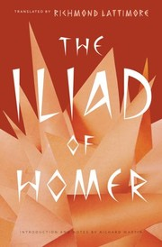
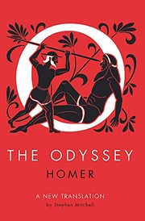
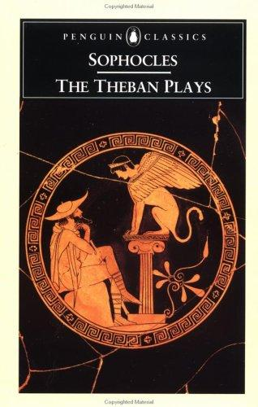
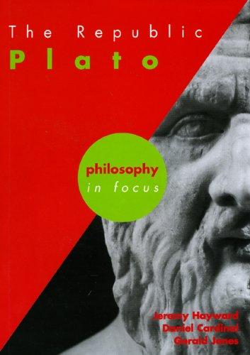
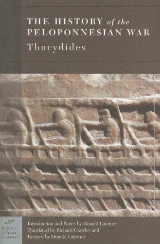

อารยธรรมกรีกโบราณและเฮลเลนิสติก
ตอนที่ 1: มหากาพย์แห่งยุคสมัย & สายธารคู่ขนาน
ประวัติศาสตร์สากลเริ่มต้นด้วยการสั่นสะเทือนของแผ่นดินรอบทะเลอีเจียน จากเรื่องเล่ามหากาพย์สงครามกรุงทรอยที่สืบทอดด้วยวาจา สู่การถือกำเนิดของ 'โพลิส' (Polis) หรือนครรัฐอิสระที่ทดลองระบอบการปกครองรูปแบบใหม่ นั่นคือประชาธิปไตยทางตรงในเอเธนส์ และระบอบทหารนิยมอันเข้มงวดในสปาร์ตา ขณะเดียวกัน คำถามเชิงปรัชญาของโสเครตีส เพลโต และอริสโตเติล ได้วางโครงสร้างระบบคิดและวิทยาศาสตร์ที่ยังคงชี้นำโลกตะวันตกจนถึงปัจจุบัน
ขณะที่เอเธนส์กำลังสร้างวิหารพาร์เธนอนและถกเถียงปรัชญา ในโลกตะวันออกคือปลายยุคชุนชิวเข้าสู่ยุคจั้นกั๋ว (Warring States) ในประเทศจีน ซึ่งเกิดการปะทะกันของ 'ร้อยสำนักคิด' (Hundred Schools of Thought) นำโดยขงจื๊อ เล่าจื๊อ และซุนวู ส่วนในชมพูทวีปคือยุคพุทธกาลที่พระสัมมาสัมพุทธเจ้าทรงเผยแผ่พระธรรม สะท้อนว่าศตวรรษที่ 5–6 ก่อนคริสตกาลคือ 'ยุคแกนกลางของมนุษยชาติ' (Axial Age) ที่มนุษย์ทั้งสองฟากโลกตั้งคำถามต่อความจริงของชีวิตพร้อมกัน
ตอนที่ 2: ภูมิรัฐศาสตร์และสมรภูมิชี้ชะตา (4 พิกัดยุทธศาสตร์)
🗺️ สงครามกรุงทรอย & การค้าช่องแคบดาร์ดาเนลส์ (~1184 BC)
🗺️ ยุทธการเทอร์โมพิลี & ซาลามิส สงครามเปอร์เซีย (480 BC)
🗺️ เอเธนส์, อะโครโพลิส & สงครามเพโลพอนนีเซียน (431–404 BC)
🗺️ อเล็กซานเดรีย & การแผ่ขยายยุคเฮลเลนิสติก (331 BC)
ตอนที่ 3: บทความวิจัยเชิงลึกประจำยุค (4 บทความ)
🏛️ สงครามกรุงทรอย, มหากาพย์อีเลียด & การผจญภัยของโอดิสซุส
สงครามกรุงทรอย, มหากาพย์อีเลียด & การผจญภัยของโอดิสซุส
ประวัติศาสตร์จริงเบื้องหลังตำนาน, ช่องแคบดาร์ดะเนลส์, กลยุทธ์ม้าไม้ และวรรณกรรมโฮเมอร์
1. เรื่องจริงทางประวัติศาสตร์ vs เทพนิยาย
ในอดีตคนคิดว่าสงครามกรุงทรอยเป็นแค่นิทานหลอกเด็ก จนกระทั่งปี 1870 ไฮน์ริช ชลีมานน์ (Heinrich Schliemann) นักโบราณคดีชาวเยอรมัน ขุดค้นพบซากเมืองทรอยโบราณ (เมืองฮิซาร์ลิก ในประเทศตุรกีปัจจุบัน) โดยพบร่องรอยการถูกเผาทำลาย กำแพงหินโบราณ และหัวลูกศรทองสัมฤทธิ์ในช่วง 1180–1200 BC ตรงตามช่วงเวลาในมหากาพย์ของโฮเมอร์
สาเหตุสงครามที่แท้จริง: ในแง่ภูมิรัฐศาสตร์ เมืองทรอยตั้งอยู่บริเวณปากทางเข้าช่องแคบดาร์ดะเนลส์ (Hellespont) คุมเส้นทางการค้าทางทะเลทั้งหมดที่เชื่อมระหว่างทะเลอีเจียนกับทะเลดำ นครรัฐกรีกโบราณ (ไมซีนี) จึงจำเป็นต้องทำลายการผูกขาดค่าธรรมเนียมและเส้นทางขนส่งสินค้า ไม่ใช่เพียงเรื่องแย่งชิง "นางเฮเลน" เท่านั้น
2. กลยุทธ์ม้าไม้เมืองทรอย (Trojan Horse)
หลังล้อมเมืองทรอยนาน 10 ปีโดยไม่สามารถเจาะกำแพงมหึมาได้ โอดิสซุส (Odysseus) กษัตริย์แห่งเกาะอิธาคา ได้คิดอุบายสร้างม้าไม้ขนาดยักษ์ ซ่อนกองทหารฝีมือเยี่ยมไว้ข้างใน แล้วแสร้งทำเป็นเผาค่ายและถอนทัพเรือหนีไป ชาวทรอยหลงเชื่อว่าเป็นเครื่องสักการะบูชาแด่เทพเจ้า จึงลากม้าไม้เข้าสู่กลางเมือง ในยามวิกาลทหารกรีกจึงแอบปีนออกมาเปิดประตูนครให้กองทัพใหญ่ที่แอบย้อนกลับมา บุกเข้าเผาทำลายกรุงทรอยจนสิ้นซาก
❌ ความเข้าใจผิด / ข่าวลือ: มหากาพย์อีเลียดของโฮเมอร์เล่าเรื่องม้าไม้จนจบสงคราม และกรุงทรอยเป็นเพียงนิทานปรัมปราที่ไม่มีจริง
✅ ข้อเท็จจริงประวัติศาสตร์: ในอีเลียดไม่มีฉากม้าไม้เลย (จบที่งานศพเฮกเตอร์) และการขุดค้นของไฮน์ริช ชลีมานน์ (1870s) พิสูจน์แล้วว่ากรุงทรอยและสงครามเผาเมืองมีอยู่จริง (ชั้นหิน Troy VIIa)
3. มหากาพย์ The Odyssey: การเดินทางกลับบ้าน 10 ปี
หลังชนะศึก ทหารกรีกกระทำการลบหลู่ศาสนสถาน ทำให้ เทพโพไซดอน เทพแห่งมหาสมุทรพิโรธ สาปให้โอดิสซุสต้องระหกระเหินกลางทะเลอีก 10 ปี ต้องเผชิญหน้ากับยักษ์ตาเดียวไซคลอปส์ (Polyphemus), เสียงเพลงมรณะของนางไซเรน, แม่มดเซียร์ซีผู้สาปคนให้กลายเป็นหมู, และอสูรร้ายซิลลากับน้ำวนคาริบดิส ก่อนจะได้กลับไปพิทักษ์บัลลังก์และภรรยา (เพเนโลพี) คืน
"มหากาพย์ของโฮเมอร์สะท้อนจิตวิญญาณของชาวกรีก: ความกล้าหาญ (Arete), ชะตากรรม (Fate), และการต่อสู้กับพลังเหนือธรรมชาติ"
4. จุดเชื่อมโยงการเรียนการสอน
- ภาพยนตร์แนะนำ: Troy (2004) กำกับโดย Wolfgang Petersen (เน้นยุทธวิธีทางทหาร) และ The Odyssey (1997)
- ประเด็นอภิปราย: ม้าไม้เมืองทรอยในปัจจุบันกลายเป็นคำศัพท์สากลทางความมั่นคงไซเบอร์ (Trojan Horse) และกลยุทธ์การแทรกซึมจากภายใน
⚔️ สงครามเปอร์เซีย (Greco-Persian Wars): มาราธอน, สปาร์ตา 300 & ยุทธนาวีซาลามิส
สงครามเปอร์เซีย (Greco-Persian Wars): มาราธอน, สปาร์ตา 300 & ยุทธนาวีซาลามิส
การปะทะกันระหว่างจักรวรรดิอเคเมนิดกับนครรัฐกรีก, สมรภูมิเทอร์โมพิลี, และการปกป้องประชาธิปไตย
❌ ความเข้าใจผิด / ข่าวลือ: กษัตริย์ลีโอไนดัสและ 300 สปาร์ตัน ยืนหยัดสู้รบและตายที่ช่องเขาเพียงลำพัง 300 คนโดยไม่มีใครช่วย
✅ ข้อเท็จจริงประวัติศาสตร์: มีกองทัพพันธมิตรกรีกกว่า 7,000 นายร่วมรบ และในวันสุดท้ายยังมีชาวเธสเปีย (Thespians) ราว 700 นาย สมัครใจอยู่สู้จนตัวตายเคียงบ่าเคียงไหล่กับสปาร์ตัน
1. ชนวนสงคราม & การขยายอำนาจของเปอร์เซีย
จักรวรรดิเปอร์เซียในยุคราชวงศ์อเคเมนิด (Achaemenid Empire) แผ่ขยายดินแดนกว้างใหญ่ไพศาลจากอียิปต์จรดลุ่มน้ำสินธุ เมื่อชาวกรีกในแคว้นไอโอเนียก่อกบฏ นครรัฐเอเธนส์ได้ส่งเรือรบไปสนับสนุน ทำให้ กษัตริย์ดาริอุสมหาราช (Darius the Great) ประกาศกรีธาทัพบุกแผ่นดินใหญ่กรีกเพื่อสั่งสอน
ในปี 490 BC เกิด ยุทธการที่ทุ่งมาราธอน (Battle of Marathon) กองทหารราบฮอปไลต์ (Hoplite) ของเอเธนส์ที่เสียเปรียบจำนวนอย่างมาก สามารถเอาชนะทหารเปอร์เซียได้อย่างเหลือเชื่อ ชัยชนะครั้งนี้นำไปสู่ตำนานเล่าขานของทหารส่งสารที่วิ่งราว 40 กิโลเมตรจากทุ่งมาราธอนกลับมาแจ้งข่าวชัยชนะที่เอเธนส์ ซึ่งกลายเป็นแรงบันดาลใจของการแข่งขัน 'วิ่งมาราธอน' ในโอลิมปิกยุคปัจจุบัน (แม้ในบันทึกประวัติศาสตร์จริงของเฮโรโดตุส ฟีดิพพิดีสตัวจริงจะวิ่งจากเอเธนส์ไปสปาร์ตา 240 กิโลเมตรเพื่อขอกำลังเสริมก่อนเริ่มรบก็ตาม)
❌ ความเข้าใจผิด / ข่าวลือ: ฟีดิพพิดีสวิ่ง 42 กม. จากมาราธอนมาเอเธนส์ ตะโกนว่า 'ชนะแล้ว' แล้วล้มลงขาดใจตายทันที
✅ ข้อเท็จจริงประวัติศาสตร์: เฮโรโดตุสบันทึกว่า ฟีดิพพิดีสตัวจริงวิ่งจากเอเธนส์ไปสปาร์ตา (ระยะทาง 240 กม. ใน 2 วัน) เพื่อขอกำลังเสริมก่อนเริ่มรบ และเขาก็ไม่ได้เสียชีวิต ส่วนเรื่องทหารวิ่ง 42 กม. จากทุ่งมาราธอนมาเอเธนส์เพื่อแจ้งชัยชนะแล้วสิ้นใจ เป็นเรื่องเล่าที่แต่งเติมขึ้นในยุคหลังจนกลายเป็นที่มาของชื่อกีฬาวิ่งมาราธอน
2. ช่องเขาเทอร์โมพิลี (Thermopylae): ความกล้าหาญของสปาร์ตา 300 นาย
สิบปีต่อมา (480 BC) กษัตริย์เซอร์ซีสที่ 1 (Xerxes I) นำกองทัพมหึมานับแสนนายบุกข้ามช่องแคบเฮลเลสปอนต์ กษัตริย์ลีโอไนดัส (Leonidas) แห่งสปาร์ตา นำทหารองครักษ์ 300 นายร่วมกับพันธมิตรกรีกไม่กี่พันคน ปักหลักยันกองทัพเปอร์เซียที่ช่องเขาแคบเทอร์โมพิลีเป็นเวลา 3 วัน แม้จะถูกคนทรยศ (เอเฟียลทีส) ชี้ทางลับจนถูกล้อมและสละชีพทั้งหมด แต่การต้านทานครั้งนี้ซื้อเวลาสำคัญยิ่งให้พันธมิตรกรีกจัดระเบียบแนวรับ
3. ยุทธนาวีซาลามิส (Battle of Salamis) & จุดจบการรุกราน
แม่ทัพ เธมิสโตคลีส (Themistocles) แห่งเอเธนส์ ใช้กลอุบายลวงกองเรือเปอร์เซียเข้ามาในช่องแคบซาลามิส เรือรบไตรรีม (Trireme) ของกรีกที่มีขนาดเล็กและคล่องตัวกว่า ได้ใช้หัวเรือหุ้มสัมฤทธิ์พุ่งชนจนเรือเปอร์เซียจมและแตกกระจาย กษัตริย์เซอร์ซีสต้องถอนทัพหนีกลับเอเชีย ชัยชนะครั้งนี้รักษาเอกราชและระบอบประชาธิปไตยของกรีกไว้ได้
"หากกรีกพ่ายแพ้ต่อเปอร์เซีย รากฐานประชาธิปไตย ปรัชญา และวิทยาศาสตร์ของโลกตะวันตกอาจไม่เคยเกิดขึ้น"
4. จุดเชื่อมโยงการเรียนการสอน
- ภาพยนตร์แนะนำ: 300 (2006) และ 300: Rise of an Empire (2014)
- เกร็ดประวัติศาสตร์: การต่อสู้ด้วยขบวนรบฟาแลงซ์ (Phalanx) ทรงประสิทธิภาพเพราะเกราะและโล่ประสานเป็นแนวกำแพงเหล็ก
🏛️ ยุคทองเอเธนส์, ประชาธิปไตยทางตรง & สงครามเพโลพอนนีเซียน (เอเธนส์ vs สปาร์ตา)
ยุคทองเอเธนส์, ประชาธิปไตยทางตรง & สงครามเพโลพอนนีเซียน
ยุคของเพริคลีส, การสร้างวิหารพาร์เธนอน, ปรัชญาโสกราตีส และสงครามกลางเมืองที่ทำลายล้างกรีก
1. ยุคทองของเพริคลีส (The Golden Age of Pericles)
หลังสงครามเปอร์เซีย เอเธนส์ก้าวขึ้นเป็นผู้นำ สันนิบาตดีเลียน (Delian League) ภายใต้การนำของรัฐบุรุษ เพริคลีส (Pericles) เอเธนส์ได้พัฒนา ประชาธิปไตยทางตรง (Direct Democracy) ที่พลเมืองชายทุกคนมีสิทธิออกเสียงในสมัชชาประชาชน (Ecclesia) มีการนำเงินกองกลางของสันนิบาตมาสร้างสถาปัตยกรรมระดับโลก เช่น วิหารพาร์เธนอน (Parthenon) บนเนินอะโครโพลิส และเป็นยุคที่ปรัชญาของ โสกราตีส (Socrates) เติบโตขึ้น
❌ ความเข้าใจผิด / ข่าวลือ: ประชาธิปไตยเอเธนส์ให้สิทธิ เสรีภาพ และความเสมอภาคแก่ทุกคนในสังคมอย่างแท้จริง
✅ ข้อเท็จจริงประวัติศาสตร์: สงวนสิทธิ์เฉพาะ 'ชายเอเธนส์เสรีชนแท้' เพียง 10–15% ของประชากรเท่านั้น สตรี ทาส (1 ใน 3 ของเมือง) และคนต่างด้าว (Metics) ไม่มีสิทธิออกเสียงใดๆ
2. ความขัดแย้ง: สันนิบาตดีเลียน (เอเธนส์) vs สันนิบาตเพโลพอนนีเซียน (สปาร์ตา)
ความมั่งคั่งและอำนาจจักรวรรดินิยมทางทะเลของเอเธนส์ สร้างความหวาดระแวงให้แก่ สปาร์ตา มหาอำนาจทางบก จนปะทุเป็น สงครามเพโลพอนนีเซียน (Peloponnesian War 431–404 BC) นักประวัติศาสตร์ธูซิดิดีส (Thucydides) บันทึกไว้ว่า: "สิ่งที่ทำให้สงครามหลีกเลี่ยงไม่ได้ คือการเติบโตของอำนาจเอเธนส์ และความกลัวที่เกิดขึ้นในใจของสปาร์ตา" (ซึ่งเป็นต้นกำเนิดทฤษฎี Thucydides Trap ในรัฐศาสตร์ปัจจุบัน)
3. โรคระบาด, ความพ่ายแพ้ & การประหารโสกราตีส
ในปี 430 BC เกิดโรคระบาดครั้งใหญ่ในเอเธนส์ คร่าชีวิตประชาชนและตัวเพริคลีสเอง ต่อมาเอเธนส์พ่ายแพ้ยับเยินในการยกทัพไปตีเกาะซิซิลี สปาร์ตาที่ได้รับเงินหนุนหลังจากเปอร์เซียสร้างกองเรือมาปิดล้อมจนเอเธนส์ต้องยอมจำนน กำแพงเมืองถูกรื้อถอน ระบอบประชาธิปไตยสั่นคลอน และในปี 399 BC เอเธนส์ได้ตัดสินประหารชีวิตโสกราตีสด้วยการดื่มยาพิษ (Hemlock) ในข้อหามอมเมาเยาวชนและไม่เคารพเทพเจ้าประจำเมือง
"สงครามเพโลพอนนีเซียนได้เผาผลาญความยิ่งใหญ่ของนครรัฐกรีก จนเปิดช่องให้มาซิโดเนียทางตอนเหนือก้าวขึ้นมากลืนกินในที่สุด"
4. จุดเชื่อมโยงการเรียนการสอน
- สื่อการเรียนรู้: บทความและการเปรียบเทียบระบอบการปกครองระหว่าง ประชาธิปไตยเอเธนส์ vs คณาธิปไตยทหารนิยมสปาร์ตา
- ประเด็นอภิปราย: กับดักธูซิดิดีส (Thucydides Trap) กับความสัมพันธ์มหาอำนาจในโลกปัจจุบัน (เช่น สหรัฐฯ vs จีน)
👑 พระเจ้าอเล็กซานเดอร์มหาราช, การพิชิตเปอร์เซีย สู่ยุคเฮลเลนิสติก (Hellenistic Era)
พระเจ้าอเล็กซานเดอร์มหาราช, การพิชิตเปอร์เซีย สู่ยุคเฮลเลนิสติก
จากมาซิโดเนียสู่อินเดีย, ยุทธการกัวกาเมลา, หอสมุดอเล็กซานเดรีย และการหลอมรวมวัฒนธรรมโลก
1. อัจฉริยภาพของกษัตริย์หนุ่มแห่งมาซิโดเนีย
หลังพระเจ้าฟิลิปที่ 2 รวมนครรัฐกรีกได้สำเร็จและถูกลอบสังหาร พระโอรสวัยเพียง 20 ปี อเล็กซานเดอร์ (Alexander the Great) ผู้เป็นศิษย์เอกของ อริสโตเติล (Aristotle) ได้ขึ้นครองราชย์ พระองค์นำทัพผสมกรีก-มาซิโดเนีย ข้ามช่องแคบดาร์ดะเนลส์ในปี 334 BC เพื่อทำภารกิจที่ยิ่งใหญ่ที่สุดในโลกยุคโบราณ: การโค่นล้มจักรวรรดิเปอร์เซีย
ด้วยยุทธวิธีทหารราบฟาแลงซ์หอกยาวซาริสซา (Sarissa) ผสานกับกองทหารม้าพันธมิตร (Companion Cavalry) อเล็กซานเดอร์พิชิตกษัตริย์ดาริอุสที่ 3 ใน ยุทธการกัวกาเมลา (Battle of Gaugamela 331 BC) และเผาพระราชวังเพอร์เซโพลิสเพื่อล้างแค้นให้เอเธนส์
2. การรุกคืบสู่อินเดีย & การปฏิเสธเดินทัพต่อ
อเล็กซานเดอร์เดินทัพข้ามเทือกเขาฮินดูกูชเข้าสู่อินเดีย รบชนะพระเจ้าโปรุสในยุทธการแม่น้ำไฮดาสเปส (Battle of the Hydaspes 326 BC) ท่ามกลางกองทัพช้างศึก ทว่าเหล่าทหารมาซิโดเนียที่เหนื่อยล้าจากการเดินทัพยาวนานกว่า 8 ปีและระยะทางกว่า 20,000 กิโลเมตร ได้ประท้วงไม่ยอมเดินทัพต่อไปยังลุ่มน้ำคงคา ทำให้อเล็กซานเดอร์จำต้องยอมถอยทัพกลับบาบิโลน และสวรรคตอย่างกะทันหันด้วยไข้ปริศนาในปี 323 BC ขณะมีพระชนมายุเพียง 32 พรรษา
❌ ความเข้าใจผิด / ข่าวลือ: อเล็กซานเดอร์หยุดขยายอาณาจักรไปทางตะวันออกเพราะรบแพ้กองทัพช้างศึกของอินเดีย
✅ ข้อเท็จจริงประวัติศาสตร์: อเล็กซานเดอร์ชนะที่แม่น้ำไฮดาสเปส แต่ต้องยอมยกทัพกลับเพราะทหารของตนเองก่อหวอดประท้วงหยุดรบ (Mutiny at Hyphasis) หลังกรำศึกหนัก 8 ปี ไกลบ้าน 17,000 ไมล์
3. มรดกยุคเฮลเลนิสติก (Hellenistic Era)
แม้จักรวรรดิจะแตกออกเป็น 4 ส่วนตามขุนพลของพระองค์ (Diadochi) แต่อเล็กซานเดอร์ได้สร้างเมืองใหม่กว่า 70 แห่ง โดยเฉพาะ เมืองอเล็กซานเดรียในอียิปต์ ที่มีประภาคารฟาโรสและหอสมุดที่ใหญ่ที่สุดในโลกโบราณ ก่อให้เกิดการหลอมรวมทางวัฒนธรรมระหว่างกรีก อียิปต์ เปอร์เซีย และอินเดีย นำไปสู่การกำเนิด พุทธศิลป์แบบคันธาระ (Gandhara Art) พระพุทธรูปที่มีใบหน้าและจีวรสง่างามตามแบบกรีกโบราณ
"ฉันไม่กลัวกองทัพสิงโตที่มีแกะเป็นผู้นำ แต่ฉันกลัวกองทัพแกะที่มีสิงโตเป็นผู้นำ" — พระเจ้าอเล็กซานเดอร์มหาราช
4. จุดเชื่อมโยงการเรียนการสอน
- ภาพยนตร์แนะนำ: Alexander (2004) กำกับโดย Oliver Stone และ Agora (2009)
- ประเด็นอภิปราย: อเล็กซานเดอร์เป็นวีรบุรุษผู้เชื่อมโยงอารยธรรม หรือเป็นผู้รุกรานที่กระหายสงคราม?
ตอนที่ 4: วรรณกรรมชิ้นเอก: กระจกส่องจิตวิญญาณมนุษย์ (5 เล่ม)

มหากาพย์อีเลียด (The Iliad)
องก์ที่ 1: ชนวนความโกรธาของอคิลลิสและการแตกแยกในค่ายรบกรีก
มหากาพย์อีเลียดมิได้เล่าสงครามกรุงทรอยตลอดทั้ง 10 ปี แต่เจาะจงเล่าเหตุการณ์เพียง 54 วันในปีสุดท้ายของสงคราม เรื่องราวเริ่มต้นขึ้นเมื่อ อกาเมมนอน (Agamemnon) แม่ทัพใหญ่ฝ่ายสัมพันธมิตรกรีก ได้ใช้อำนาจบาตรใหญ่ยึดตัวนางบริเซอิส (Briseis) หญิงเชลยศึกผู้เป็นรางวัลเกียรติยศของ อคิลลิส (Achilles) ยอดนักรบอันดับหนึ่งแห่งกองทัพไมซีเนียน การกระทำนี้ถือเป็นการลบหลู่อย่างรุนแรงต่อเกียรติยศนักรบ (Timē) อคิลลิสบันดาลโทสะอย่างรุนแรงและประกาศถอนทหารเผ่าไมร์มิดอน (Myrmidons) ออกจากสมรภูมิ พร้อมทั้งร้องขอต่อเทพีเธทิสผู้เป็นมารดา ให้ไปวิงวอนต่อมหาเทพซุสเพื่อดลบันดาลให้กองทัพโทรจันของเจ้าชายเฮกเตอร์ตีทัพกรีกจนถอยร่นตกทะเล เพื่อพิสูจน์ให้อกาเมมนอนเห็นว่า กองทัพกรีกไร้ความหมายสิ้นเชิงหากปราศจากเขา
องก์ที่ 2: ความพ่ายแพ้ของฝ่ายกรีกและความตายของพาโทรคลัส
เมื่อไร้อคิลลิส กองทัพโทรจันนำโดย เจ้าชายเฮกเตอร์ (Hector) ผู้ภักดีต่อบ้านเมือง ได้รุกไล่กองทัพกรีกจนถอยร่นมาติดชายหาด และเริ่มจุดไฟเผาเรือรบกรีก ท่ามกลางวิกฤตนี้ พาโทรคลัส (Patroclus) สหายสนิทผู้เป็นดั่งดวงใจของอคิลลิส ทนเห็นพี่น้องร่วมรบถูกสังหารไม่ไหว จึงขอร้องอคิลลิสเพื่อขอยืมชุดเกราะทองคำของเขาออกไปนำทัพ เพื่อลวงให้ฝ่ายโทรจันคิดว่ายอดขุนพลอคิลลิสหวนคืนสู่สมรภูมิ พาโทรคลัสสามารถขับไล่ทหารโทรจันกลับไปถึงหน้าประตูนคร แต่ด้วยความฮึกเหิม เขาฝ่าฝืนคำเตือนของอคิลลิสและถูกเฮกเตอร์สังหารในสนามรบอย่างน่าสลด พร้อมริบชุดเกราะของอคิลลิสไป
องก์ที่ 3: เพลิงแค้น การดวลชะตากรรม และการคืนร่างของเฮกเตอร์
ข่าวการตายของพาโทรคลัสทำให้อคิลลิสจมสู่ความโศกเศร้าอย่างบ้าคลั่ง ความโกรธาต่ออกาเมมนอนมลายหายไป เหลือเพียงความกระหายเลือดที่จะล้างแค้นเฮกเตอร์ อคิลลิสสวมชุดเกราะใหม่ที่เทพเฮเฟสตัสตีขึ้น แล้วพุ่งเข้าสู่สมรภูมิดั่งมัจจุราช ไล่สังหารทหารโทรจันจนแม่น้ำสคามันเดอร์เต็มไปด้วยซากศพ ในการดวลเดี่ยวหน้าประตูกรุงทรอย อคิลลิสสังหารเฮกเตอร์ได้อย่างไร้ความปรานี และกระทำการลบหลู่ธรรมเนียมสงครามด้วยการผูกศพเฮกเตอร์ไว้ท้ายรถศึกแล้วลากประจานรอบสุสานพาโทรคลัสทุกวัน
จุดสูงสุดของมหากาพย์มิใช่ฉากชัยชนะ แต่เป็นฉากที่ กษัตริย์เพรียม (Priam) กษัตริย์ชราแห่งทรอย แอบลอบเข้าไปในค่ายพักของอคิลลิสยามวิกาล คุกเข่าลงจูบมือของชายผู้สังหารลูกชายของตน เพื่อขอไถ่ศพเฮกเตอร์กลับไปประกอบพิธีทางศาสนา ความกล้าหาญและความระทมของเพรียมได้สะกิดความทรงจำถึงบิดาของอคิลลิสเอง ยอดนักรบผู้เหี้ยมโหดถึงกับหลั่งน้ำตา ทั้งสองร่วมแบ่งปันความโศกเศร้าในฐานะมนุษย์ที่ตกอยู่ใต้ชะตากรรมของสงคราม อคิลลิสยอมคืนศพเฮกเตอร์และสั่งพักรบ 12 วันเพื่อจัดพิธีศพอย่างสมเกียรติ
1. โครงสร้างสังคม ชนชั้น และค่านิยมเกียรติยศในยุคไมซีเนียน (Heroic Code)
อีเลียดสะท้อนโครงสร้างสังคมกรีกยุคสำริด (Mycenaean Bronze Age) ซึ่งขับเคลื่อนด้วย "วัฒนธรรมแห่งความอับอาย" (Shame Culture) คุณค่าสูงสุดของมนุษย์ไม่ได้วัดจากความดีทางนามธรรม แต่วัดจาก Arete (ความเป็นเลิศทางการรบ) และ Timē (เกียรติยศที่สังคมมอบให้ในรูปของรางวัลและเชลยศึก) ความขัดแย้งระหว่างอกาเมมนอนกับอคิลลิสคือภาพสะท้อนของการปะทะกันระหว่าง อำนาจตามตำแหน่งแห่งหน (Institutional Authority) ของราชาผู้ครองนคร กับ อำนาจบารมีความสามารถส่วนบุคคล (Meritocratic Prowess) ซึ่งเป็นปมปัญหาทางการเมืองของกรีกมาตลอดทุกยุคสมัย
2. ชนวนประวัติศาสตร์: สงครามแย่งชิงทรัพยากรและการค้าช่องแคบทะเลดำ
เบื้องหลังเรื่องเล่าเรื่องการชิงตัวนางเฮเลน คือการต่อสู้ทางภูมิรัฐศาสตร์จริงในศตวรรษที่ 12 ก่อน ค.ศ. ทรอยคุมช่องแคบดาร์ดะเนลส์ (Hellespont) ซึ่งเป็นเส้นทางขนส่งข้าวสาลี ทองคำ และแร่ดีบุกจากทะเลดำเข้าสู่ทะเลอีเจียน การที่นครรัฐกรีกร่วมมือกันยกทัพใหญ่ไปปิดล้อมทรอยนานนับทศวรรษ สะท้อนความจำเป็นทางเศรษฐกิจของอารยธรรมไมซีเนียนในการทำลายการผูกขาดทางการค้า ก่อนที่อารยธรรมนี้จะล่มสลายลงในยุค Bronze Age Collapse
3. เจตจำนงของโฮเมอร์และสารต่อมนุษยชาติ
แม้จะเต็มไปด้วยฉากนองเลือด แต่อีเลียดคือบทประพันธ์ที่ตั้งคำถามต่อความไร้สาระของสงครามอย่างทรงพลังที่สุด เทพเจ้าบนยอดเขาโอลิมปัสเล่นกับชีวิตมนุษย์ประหนึ่งเกมกระดาน ขณะที่มนุษย์—ไม่ว่าจะเป็นกรีกหรือโทรจัน—ล้วนต้องทนทุกข์และสูญเสียบุคคลอันเป็นที่รัก ฉากการพบกันระหว่างเพรียมและอคิลลิสเป็นจุดเริ่มต้นของ มนุษยนิยม (Humanism) ที่ก้าวข้ามเส้นแบ่งทางเผ่าพันธุ์ สัญชาติ และความเป็นศัตรู
""จงระลึกถึงบิดาของเจ้าเถิด อคิลลิสผู้เสมอเหมือนเทพเจ้า... ข้าได้กล้ำกลืนทำในสิ่งที่ไม่มีมนุษย์เดินดินผู้ใดเคยทำ นั่นคือการจรดริมฝีปากจูบมือของผู้ที่ได้สังหารลูกชายของข้าเอง" — กษัตริย์เพรียม"

มหากาพย์โอดิสซีย์ (The Odyssey)
องก์ที่ 1: วิกฤตการณ์บนเกาะอิธาคาและการออกตามหาของเทเลมาคัส
มหากาพย์โอดิสซีย์เริ่มต้นขึ้น 10 ปีหลังสงครามกรุงทรอยสิ้นสุดลง (และเป็นเวลา 20 ปีที่โอดิสซุสจากบ้านมา) บนเกาะอิธาคา บ้านเมืองตกอยู่ในความระส่ำระสาย ชายหนุ่มขุนนางท้องถิ่นกว่าร้อยคนได้บุกเข้ามาจับจองพระราชวัง ผลาญทรัพย์สมบัติ สังหารสัตว์เลี้ยง และกดดันให้ พระนางเพเนโลพี (Penelope) ภรรยาผู้ซื่อสัตย์ของโอดิสซุส เลือกใครคนหนึ่งเป็นสามีใหม่เพื่อครองบัลลังก์ เพเนโลพีใช้ไหวพริบประวิงเวลาด้วยการทอผ้าห่อศพของบิดาสามี โดยแอบเลาะด้ายออกในยามค่ำคืน ขณะที่ เทเลมาคัส (Telemachus) โอรสหนุ่มผู้ไร้บารมี ได้รับคำแนะนำจากเทพีอธีนาให้ล่องเรือออกตามหาข่าวบิดา
องก์ที่ 2: มหากาพย์การเดินทาง 10 ปีในท้องทะเลปริศนา
เรื่องราวตัดสลับไปยังโอดิสซุสผู้ถูกนางพราย คาลิปโซ (Calypso) กักขังไว้บนเกาะโอจิเจียถึง 7 ปี จนกระทั่งมหาเทพซุสสั่งให้ปล่อยตัว เขาต่อแพลอยไปขึ้นฝั่งที่เกาะเฟเอเชีย และได้เล่าเรื่องการผจญภัยสุดมหัศจรรย์ตลอดหลายปีที่ผ่านมา:
- การใช้ไหวพริบมอมเหล้าและแทงตา ยักษ์ตาเดียวโพลีฟีมัส (Polyphemus) บุตรแห่งโพไซดอน พร้อมบอกว่าตนชื่อ "Nobody" ทำให้ยักษ์ร้องขอความช่วยเหลือไม่ได้ แต่การที่โอดิสซุสตระโกนบอกชื่อจริงด้วยความทะนงตนในภายหลัง ทำให้เทพโพไซดอนสาปแช่งให้เขาต้องระหกระเหินสูญเสียลูกเรือทั้งหมด
- การเอาชีวิตรอดจากมนต์สะกดของแม่มด เซียร์ซี (Circe) ผู้สาปคนเป็นหมู, การเดินทางลงสู่ยมโลก (Hades) เพื่อฟังคำพยากรณ์จากวิญญาณของไทรีเซียสและพบวิญญาณของมารดาและอคิลลิส
- การสั่งให้ลูกเรือเอาขี้ผึ้งอุดหูและผูกตนเองไว้กับเสากระโดงเรือเพื่อฟังเสียงเพลงมรณะของ นางไซเรน (Sirens), และการฝ่าดงอสูรร้ายหกหัว ซิลลา (Scylla) และน้ำวนยักษ์ คาริบดิส (Charybdis)
องก์ที่ 3: การกลับคืนสู่เหย้าและการชำระแค้นขุนนางทรยศ
กษัตริย์เฟเอเชียประทับใจจึงจัดเรือส่งโอดิสซุสกลับถึงอิธาคา เทพีอธีนาแปลงกายให้เขากลายเป็นขอทานชราเพื่อสืบดูความจงรักภักดี โอดิสซุสได้พบกับเทเลมาคัสโอรสของตนและคนเลี้ยงสุกรผู้ซื่อสัตย์ เพเนโลพีจัดการแข่งขันยิงธนูขึ้น โดยสัญญาว่าจะแต่งงานกับผู้ที่สามารถขึ้นสายธนูยักษ์ของโอดิสซุสและยิงลูกศรลอดรูขวาน 12 เล่มได้ ไม่มีผู้หมายปองคนใดทำได้ จนกระทั่งขอทานชราก้าวออกมา เขาขึ้นสายธนูได้อย่างง่ายดายและยิงศรลอดรูขวานอย่างแม่นยำ จากนั้นโอดิสซุสก็เผยตัว ร่วมมือกับเทเลมาคัสปิดประตูห้องโถงและสังหารกลุ่มผู้หมายปองที่ฉ้อฉลทั้งหมด กอบกู้ความสงบสุข บัลลังก์ และความรักของครอบครัวกลับคืนมา
1. การเปลี่ยนผ่านจากยุคมืดสู่ยุคแห่งการเดินเรือและการค้า (Archaic Colonization)
หากอีเลียดสะท้อนโลกยุคสงครามปิดล้อมบนบก โอดิสซีย์ก็สะท้อนจิตวิญญาณของชาวกรีกในศตวรรษที่ 8 ก่อน ค.ศ. ซึ่งเริ่มฟื้นตัวจากยุคมืด (Greek Dark Ages) และขยายการเดินเรือสำรวจ ก่อตั้งอาณานิคมการค้าไปทั่วมหาสมุทรเมดิเตอร์เรเนียน ทะเลในโอดิสซีย์คือพรมแดนแห่งความไม่แน่นอน ดินแดนแปลกประหลาดที่เต็มไปด้วยสัตว์ประหลาดสะท้อนความกลัวและความพิศวงต่อโลกภายนอกที่ยังไม่ถูกสำรวจ
2. ชัยชนะของปัญญาและไหวพริบ (Mētis) เหนือพละกำลังดิบ (Biē)
อคิลลิสในอีเลียดเป็นตัวแทนของพละกำลังดิบและความกล้าหาญที่ยอมแลกชีวิตเพื่อความอมตะ แต่อาคิลลิสในยมโลกกลับบอกโอดิสซุสว่า "ขอยอมเป็นทาสรับใช้ของชาวนาผู้ยากไร้บนโลกมนุษย์ ดีกว่าเป็นราชาปกครองวิญญาณคนตายทั้งหมดในยมโลก" โอดิสซุสคือตัวแทนของมนุษย์ยุคใหม่ที่ให้คุณค่ากับ Mētis (สติปัญญา การปรับตัว และการเอาชีวิตรอด) วีรบุรุษมิใช่คนที่ตายอย่างสง่างาม แต่คือคนที่สามารถกลับบ้าน (Nostos) มารับผิดชอบครอบครัวและสร้างระเบียบแก่ชุมชน
3. สถาบันต้อนรับคนแปลกหน้า (Xenia) เสาหลักศีลธรรมของอารยธรรมกรีก
ความขัดแย้งหลักในโอดิสซีย์หมุนรอบแนวคิด Xenia (การให้เกียรติและต้อนรับแขกแปลกหน้า) ซึ่งถือเป็นกฎศักดิ์สิทธิ์ของมหาเทพซุส ยักษ์ไซคลอปส์ถูกลงทัณฑ์เพราะจับแขกกินเป็นอาหาร ขณะที่กลุ่มผู้หมายปองในอิธาคาถูกประหารเพราะละเมิดมารยาทเจ้าบ้าน ผลาญทรัพย์สินและข่มเหงคนอ่อนแอกว่า โอดิสซีย์จึงทำหน้าที่เป็นคัมภีร์ศีลธรรมที่วางรากฐานระเบียบสังคมของนครรัฐกรีก (Polis)
""โอ้ มิวส์เอ๋ย จงขับขานเรื่องราวของบุรุษผู้ชาญฉลาดรอบด้าน ผู้ร่อนเร่พเนจรไปไกลแสนไกล หลังจากที่ได้ทำลายป้อมปราการศักดิ์สิทธิ์แห่งกรุงทรอยลงแล้ว" — บทเปิดมหากาพย์โอดิสซีย์"

ราชาอีดิปุส (Oedipus Rex)
องก์ที่ 1: โรคระบาดในนครธีบส์และคำทำนายจากเดลฟี
นครธีบส์ตกอยู่ใต้หายนะจากโรคระบาดร้ายแรง ผู้คน พืชผล และสัตว์เลี้ยงล้มตายเป็นเบือ ประชาชนพากันมาร้องขอความช่วยเหลือจาก กษัตริย์อีดิปุส (Oedipus) วีรบุรุษผู้เคยช่วยกอบกู้นครธีบส์จากการไขปริศนาของตัวสฟิงซ์ (Sphinx) อีดิปุสได้ส่งครีออนน้องเขยไปขอคำชี้แนะจากวิหารสุริยเทพอะพอลโล ณ เมืองเดลฟี คำพยากรณ์ระบุว่า โรคระบาดจะยุติลงได้ก็ต่อเมื่อนครธีบส์ได้ขับไล่หรือประหารผู้ที่สังหาร กษัตริย์ไลอุส (Laius) อดีตกษัตริย์องค์ก่อน อีดิปุสประกาศกร้าวต่อหน้าปวงชนว่าจะตามล่าตัวฆาตกรผู้นั้นมาลงทัณฑ์ให้จงได้ โดยไม่รู้เลยว่าเขากำลังสาปแช่งตนเอง
องก์ที่ 2: การเผชิญหน้ากับความจริงและพยานปากเอก
อีดิปุสเรียกตัว ไทรีเซียส (Tiresias) นักพยากรณ์ตาบอดผู้หยั่งรู้ฟ้าดินมาสอบถาม ไทรีเซียสปฏิเสธที่จะเอ่ยความจริง แต่อีดิปุสกลับกล่าวหาว่าไทรีเซียสสมคบคิดกับครีออนเพื่อแย่งชิงบัลลังก์ ไทรีเซียสจึงระเบิดความจริงออกมาว่า "ฆาตกรที่เจ้าตามหาอยู่ ก็คือตัวเจ้าเอง!" อีดิปุสโกรธจัดและไม่ยอมเชื่อ พระนาง โจคาสตา (Jocasta) ผู้เป็นมเหสี (และอดีตมเหสีของไลอุส) พยายามปลอบใจว่าอย่าไปเชื่อคำทำนาย โดยเล่าว่าเคยมีคำทำนายว่าไลอุสจะถูกลูกชายแท้ๆ ฆ่าตาย แต่ความจริงไลอุสถูกโจรสังหาร ณ ทางสามแพร่ง และเด็กคนนั้นก็ถูกมัดเท้าไปทิ้งบนภูเขาตั้งแต่แรกเกิด
ทว่าคำว่า "ทางสามแพร่ง" กลับทำให้อีดิปุสเริ่มหวาดระแวง เขาจำได้ว่าในอดีต ณ ทางสามแพร่ง เขาเคยสังหารชายสูงศักดิ์คนหนึ่งพร้อมผู้ติดตามเพราะวิวาทเรื่องการแย่งทางเดิน อีดิปุสจึงเรียกตัวคนเลี้ยงแกะผู้รอดชีวิตเพียงคนเดียวจากเหตุการณ์นั้นมาสอบสวน
องก์ที่ 3: ความจริงกระจ่าง การควักดวงตา และการเนรเทศตนเอง
ผู้ส่งสารจากเมืองโครินธ์เดินทางมาแจ้งข่าวว่า กษัตริย์โพลีบัสแห่งโครินธ์ผู้ที่อีดิปุสคิดว่าเป็นบิดาแท้ๆ สวรรคตแล้วด้วยโรคชรา อีดิปุสโล่งใจที่ตนไม่ต้องฆ่าพ่อตามคำทำนาย แต่ผู้ส่งสารกลับเปิดเผยความจริงอันน่าสะพรึงกลัวว่า อีดิปุสมิใช่บุตรแท้ๆ ของโพลีบัส แต่เป็นทารกที่คนเลี้ยงแกะแห่งนครธีบส์มอบให้ตนไปถวายโพลีบัส เมื่อคนเลี้ยงแกะชราถูกนำตัวมาเค้นคอ ความจริงอันอัปลักษณ์ก็ถูกเปิดโปงอย่างสมบูรณ์: อีดิปุสคือโอรสแท้ๆ ของไลอุสและโจคาสตา ผู้ถูกนำไปทิ้งเพื่อเลี่ยงคำทำนาย แต่รอดชีวิตมาได้ และได้สังหารบิดาตนเอง ณ ทางสามแพร่ง ก่อนจะมาได้มารดาแท้ๆ เป็นภรรยาและให้กำเนิดบุตรสี่คน
เมื่อตระหนักถึงความจริง โจคาสตาวิ่งเข้าไปในห้องบรรทมและผูกคอตายด้วยความอัปยศ อีดิปุสพังประตูเข้าไปเห็นศพมารดา/ภรรยา จึงดึงเข็มกลัดทองคำจากชุดของนางมาทิ่มแทงลูกตาของตนเองซ้ำแล้วซ้ำเล่าจนบอดสนิท เพื่อมิให้ต้องทนมองหน้าบิดามารดาในปรโลก หรือมองหน้าลูกๆ ในชาตินี้ จากนั้นอีดิปุสผู้ตาบอดจึงยอมรับการเนรเทศออกจากนครธีบส์ ออกเดินทางพเนจรในฐานะคนบาปผู้ต่ำต้อยที่สุดในแผ่นดิน
1. บริบทประวัติศาสตร์: โรคระบาดครั้งใหญ่ในเอเธนส์ (Plague of Athens 430 BC)
โซโฟคลีสเขียนราชาอีดิปุสขึ้นในช่วงสงครามเพโลพอนนีเซียน ขณะที่เอเธนส์กำลังเผชิญหน้ากับโรคระบาดครั้งมโหฬารที่คร่าชีวิตผู้คนไปหนึ่งในสาม รวมทั้ง เพริคลีส ผู้นำสูงสุด ภาพเปิดฉากของนครธีบส์ที่เต็มไปด้วยศพ ควันเผาศพ และความสิ้นหวัง มิใช่นิทานโบราณ แต่คือ ภาพความจริงสะท้อนชีวิตจริงที่ชาวเอเธนส์กำลังเผชิญอยู่ในโรงละครกลางแจ้ง บทละครนี้จึงเป็นการสะท้อนความรู้สึกไร้อำนาจของมนุษย์ต่อภัยพิบัติธรรมชาติและลิขิตสวรรค์
2. การตั้งคำถามต่อยุคเรืองปัญญาของเอเธนส์ (Enlightenment vs Piety)
อีดิปุสเป็นตัวแทนของ ปัญญาชนเอเธนส์ในยุคทอง ผู้เปี่ยมไปด้วยเหตุผล มั่นใจในสติปัญญา และเชื่อว่ามนุษย์สามารถไขปริศนาทุกอย่างได้ในโลก (ดั่งที่เขาเอาชนะสฟิงซ์ด้วยคำตอบว่า "มนุษย์") แต่โซโฟคลีสแสดงให้เห็นว่า ปัญญาของมนุษย์นั้นช่างตื้นเขินและตาบอดเมื่อเทียบกับระเบียบแห่งจักรวาล คนตาดีอย่างอีดิปุสกลับมองไม่เห็นความจริง ขณะที่นักพยากรณ์ตาบอดอย่างไทรีเซียสกลับหยั่งรู้ความจริงทุกอย่าง นี่คือคำเตือนเชิงปรัชญาต่อความทะนงตน (Hubris) ของระบอบประชาธิปไตยเอเธนส์
3. การรับผิดชอบทางการเมืองของผู้นำ (Civic Responsibility)
แม้อีดิมุสจะทำบาปโดยไม่เจตนา แต่เมื่อความจริงปรากฏ เขาไม่เคยหลบหนีความผิด ไม่โทษโชคชะตา และไม่ใช้อภิสิทธิ์กษัตริย์เพื่อละเว้นโทษตนเอง เขารักษาคำสาบานที่ให้ไว้กับประชาชนด้วยการลงโทษตนเอง ควักลูกตา และยอมถูกเนรเทศเพื่อให้เมืองรอดพ้นจากภัยพิบัติ นี่คือแบบอย่างของ ความรับผิดชอบสูงสุดทางการเมือง (Civic Accountability) ที่สังคมประชาธิปไตยกรีกยกย่อง
""เจ้ามองเห็นแสงตะวัน แต่เจ้ากลับมองไม่เห็นความชั่วช้าที่เจ้าอาศัยอยู่ เจ้าไม่รู้ว่าเจ้าอยู่ที่ไหน และเจ้าไม่รู้ว่าเจ้ากำลังร่วมเตียงอยู่กับใคร!" — ไทรีเซียส กล่าวกะอีดิปุส"

อุตมรัฐ (The Republic)
องก์ที่ 1: การค้นหาความหมายของ 'ความยุติธรรม' (What is Justice?)
บทสนทนาเริ่มต้นที่บ้านของเซฟาลุสในเมืองท่าพีเรอุส โสกราตีสร่วมสนทนากับเหล่าสหายเพื่อตอบคำถามพื้นฐานที่สุด: "ความยุติธรรมคืออะไร?" ทราซีมาคุส (Thrasymachus) นักปรัชญากลุ่มโซฟิสต์ ได้เสนอทัศนะสัจนิยมแบบดิบเถื่อนว่า "ความยุติธรรมคือผลประโยชน์ของผู้ที่แข็งแรงกว่า (Justice is the interest of the stronger)" กฎหมายถูกเขียนขึ้นโดยชนชั้นปกครองเพื่อรับใช้ตนเอง โสกราตีสคัดค้านและเสนอว่า ความยุติธรรมเป็นคุณธรรมที่แท้จริงและสร้างความสุขที่ยั่งยืน เพื่อจะเข้าใจความยุติธรรมในระดับปัจเจกบุคคล โสกราตีสจึงเสนอให้ขยายภาพออกไปมอง "ความยุติธรรมในระดับรัฐ" (Justice in the State) โดยร่วมกันสร้างแบบจำลองเมืองในอุดมคติขึ้นมา
องก์ที่ 2: โครงสร้างรัฐในอุดมคติและชนชั้นทั้งสาม (The Tripartite City)
เพลโตแบ่งพลเมืองในอุตมรัฐ (Kallipolis) ออกเป็น 3 ชนชั้น ซึ่งสอดคล้องกับโครงสร้างจิตวิญญาณ 3 ส่วนของมนุษย์:
- ชนชั้นผู้ผลิต (Producers / Artisans): สอดคล้องกับตัณหาความอยาก (Appetite) ทำหน้าที่ผลิตอาหารและสินค้า คุณธรรมประจำชนชั้นคือ ความพอประมาณ (Temperance)
- ชนชั้นผู้พิทักษ์รบ (Auxiliaries / Warriors): สอดคล้องกับความฮึกเหิมและจิตวิญญาณ (Spiritedness) ทำหน้าที่ปกป้องเมือง คุณธรรมคือ ความกล้าหาญ (Courage)
- ชนชั้นผู้ปกครอง (Guardians / Rulers): สอดคล้องกับปัญญาและเหตุผล (Reason) ทำหน้าที่ชี้นำรัฐ คุณธรรมคือ ปรีชาญาณ (Wisdom)
ความยุติธรรมในรัฐ เกิดขึ้นเมื่อแต่ละชนชั้นทำหน้าที่ตามธรรมชาติของตนอย่างสมบูรณ์โดยไม่ก้าวก่ายหน้าที่ของผู้อื่น เพื่อป้องกันการคอร์รัปชัน ชนชั้นผู้ปกครองจะต้องสละทรัพย์สินส่วนตัวทั้งหมด อยู่ร่วมกันในค่ายส่วนกลาง ไม่มีครอบครัวเดี่ยว และให้กำเนิดบุตรภายใต้การจับคู่ของรัฐ
องก์ที่ 3: ราชาปราชญ์ และอุปมานิทัศน์เรื่องถ้ำ (The Allegory of the Cave)
โสกราตีสประกาศข้อเสนออันอื้อฉาวว่า สังคมมนุษย์จะไม่มีวันพ้นจากทุกข์ภัยได้เลย จนกว่า "นักปรัชญาจะได้เป็นกษัตริย์ หรือกษัตริย์ในโลกนี้จะหันมาศึกษาปรัชญาอย่างลึกซึ้งแท้จริง" (Philosopher Kings) เพราะมีเพียงผู้เข้าถึงโลกแห่งสัจธรรม (World of Forms) เท่านั้นที่ปกครองโดยไม่หวังผลประโยชน์ส่วนตน
เพื่ออธิบายทฤษฎีนี้ เพลโตใช้อุปมานิทัศน์อันโด่งดัง: ถ้ำใต้พิภพ (The Cave) มนุษย์เปรียบเสมือนคนคุกที่ถูกล่ามโซ่อยู่ในถ้ำมืดตั้งแต่เกิด มองเห็นเพียงเงาของหุ่นจำลองที่ทอดลงบนผนังถ้ำจากแสงกองไฟด้านหลัง และหลงคิดว่าเงานั้นคือความจริงทั้งมวล นักปรัชญาคือผู้ที่หลุดพ้นจากโซ่ตรวน ตะเกียกตะกายปีนขึ้นสู่ปากถ้ำ จนได้เผชิญหน้ากับแสงอาทิตย์อันเจิดจ้า (สัจธรรมและความดีสูงสุด - Form of the Good) และมีหน้าที่ต้องยอมเดินกลับลงไปในถ้ำมืดอีกครั้ง เพื่อปลดปล่อยเพื่อนมนุษย์ แม้จะเสี่ยงต่อการถูกคนในถ้ำรุมประหารก็ตาม
1. ชนวนบาดแผลทางใจ: การตัดสินประหารชีวิตโสกราตีส (399 BC)
อุตมรัฐถูกเขียนขึ้นจากความผิดหวังและเคียดแค้นอย่างรุนแรงของเพลโตต่อ ระบอบประชาธิปไตยทางตรงของเอเธนส์ ที่ลงมติประหารชีวิตโสกราตีส ผู้เป็นอาจารย์และเป็นบุคคลที่เพลโตถือว่ามีปัญญาและคุณธรรมสูงสุดในยุค สำหรับเพลโต ประชาธิปไตยคือระบอบที่เปิดช่องให้คนโง่เขลา ชนชั้นนำประชานิยม (Demagogues) และฝูงชนที่ไร้การศึกษา ชี้นำการตัดสินใจของรัฐ นำไปสู่ความหายนะในสงครามเพโลพอนนีเซียน
2. การวิพากษ์วงจรอุบาทว์ของระบอบการปกครอง 5 แบบ
ในเล่ม 8 และ 9 เพลโตได้วิเคราะห์พลวัตความเสื่อมถอยของระบอบการเมืองไว้อย่างเฉียบคม โดยระบุว่ารัฐจะเสื่อมถอยเป็นลูกโซ่: จาก ราชาปราชญ์ (Aristocracy) → สู่ระบอบเกียรติยศนักรบ (Timocracy) → สู่ระบอบคณาธิปไตยคนรวย (Oligarchy) → สู่ ระบอบประชาธิปไตยมวลชน (Democracy) ที่เสรีภาพล้นเกินจนกลายเป็นอนาธิปไตย → และในที่สุด ประชาชนจะโหยหาผู้กอบกู้จนเปิดทางให้ ทรราชย์ (Tyranny) ก้าวขึ้นสู่อำนาจเบ็ดเสร็จ
3. ผลกระทบและมรดกทางความคิดต่อโลก
อุตมรัฐของเพลโตคือพิมพ์เขียวของทั้ง อุดมคติเสรีนิยมทางปัญญา (การศึกษา สิทธิที่เท่าเทียมของสตรีในการเป็นผู้ปกครอง) และในเวลาเดียวกันก็เป็นต้นแบบของ รัฐเผด็จการเบ็ดเสร็จ (Totalitarianism) (การเซ็นเซอร์วรรณกรรม ดนตรี ศิลปะ การควบคุมประชากร และการโกหกอันสูงส่ง - The Noble Lie) ซึ่งคาร์ล ป็อปเปอร์ (Karl Popper) ได้วิพากษ์ในศตวรรษที่ 20 ว่าเพลโตคือหนึ่งในศัตรูตัวฉกาจของสังคมเปิด
""จนกว่านักปรัชญาจะได้เป็นกษัตริย์ในนครต่างๆ หรือกษัตริย์และเจ้าผู้ปกครองในโลกปัจจุบันจะเปี่ยมด้วยจิตวิญญาณและพลังแห่งปรัชญาอย่างแท้จริง... นครทั้งหลายและมนุษยชาติจะไม่มีวันได้พักจากหายนะและความชั่วร้ายเลย" — โสกราตีส ใน อุตมรัฐ เล่ม 5"

ประวัติศาสตร์สงครามเพโลพอนนีเซียน (History of the Peloponnesian War)
องก์ที่ 1: จุดกำเนิดสงครามและความขัดแย้งของสองมหาอำนาจ
ธูซิดิดีส นายพลชาวเอเธนส์ผู้ถูกเนรเทศหลังความพ่ายแพ้ในสมรภูมิแอมฟิโพลิส ได้ใช้เวลาตลอดช่วงสงครามบันทึกเหตุการณ์อย่างเป็นกลางและเป็นระบบ เขาปฏิเสธที่จะอ้างอิงเทพเจ้าหรือนิทานปรัมปราแบบเฮโรโดตุส แต่ใช้หลักฐานเชิงประจักษ์และการสัมภาษณ์พยานทั้งสองฝ่าย ธูซิดิดีสได้สรุปสาเหตุแท้จริงของสงครามไว้ในประโยคอมตะว่า: "สิ่งที่ทำให้สงครามเป็นสิ่งที่หลีกเลี่ยงไม่ได้ คือการเติบโตของอำนาจเอเธนส์ และความกลัวที่เกิดขึ้นในใจของสปาร์ตา"
หลังสงครามเปอร์เซีย เอเธนส์ใช้สันนิบาตดีเลียนขยายอำนาจทางทะเลจนกลายเป็นจักรวรรดิการค้าที่มั่งคั่ง ขณะที่สปาร์ตามหาอำนาจทางบกเดิมเกิดความหวาดระแวง เมื่อความขัดแย้งเล็กๆ ระหว่างนครคอรินธ์ (พันธมิตรสปาร์ตา) กับเกาะคอร์ไซราลุกลาม เอเธนส์ได้เข้าแทรกแซง จนปะทุเป็นสงครามเต็มรูปแบบในปี 431 ก่อน ค.ศ.
องก์ที่ 2: สุนทรพจน์งานศพของเพริคลีสสู่โรคระบาดใหญ่
ในฤดูหนาวแรกของสงคราม เพริคลีสได้กล่าว สุนทรพจน์งานศพ (Pericles' Funeral Oration) เชิดชูระบอบประชาธิปไตย วัฒนธรรม และเสรีภาพของเอเธนส์ว่าเป็น "โรงเรียนแห่งกรีซ" เพื่อปลุกใจชาวเมือง ทว่าในปีถัดมา กองทัพสปาร์ตาบุกปิดล้อมชนบทเอเธนส์ ทำให้ชาวบ้านแห่เข้ามาลี้ภัยในกำแพงเมืองที่แออัดจนเกิด โรคระบาดใหญ่ในเอเธนส์ (430 BC) คร่าชีวิตผู้คนรวมทั้งเพริคลีสเอง ธูซิดิดีสบันทึกอย่างเจ็บปวดว่า โรคระบาดมิได้ทำลายแค่ร่างกาย แต่ได้ทำลายโครงสร้างทางศีลธรรม กฎหมาย และระเบียบสังคมของเอเธนส์จนพังทลาย ผู้คนหันมาแสวงหาความสุขเฉพาะหน้าเพราะคิดว่าทุกคนกำลังจะตาย
องก์ที่ 3: การเจรจาที่เกาะมีลอส และความหายนะที่ซิซิลี
จุดสูงสุดของแนวคิดสัจนิยมปรากฏใน การเจรจาที่เกาะมีลอส (Melian Dialogue 416 BC) เมื่อเอเธนส์ส่งกองทัพเรือไปบังคับให้ชาวเกาะมีลอส (ซึ่งเป็นกลาง) ยอมสวามิภักดิ์และจ่ายบรรณาการ เมื่อชาวมีลอสอ้างความยุติธรรม ศีลธรรม และความช่วยเหลือจากเทพเจ้า ทูตเอเธนส์ได้ตอกกลับด้วยประโยคที่สะเทือนประวัติศาสตร์การเมืองโลกว่า: "ความยุติธรรมจะมีผลใช้บังคับได้ ก็เฉพาะในหมู่ผู้ที่มีอำนาจเท่าเทียมกันเท่านั้น แต่ในความเป็นจริง ผู้เข้มแข็งย่อมทำในสิ่งที่พวกเขาทำได้ และผู้อ่อนแอย่อมต้องทนรับในสิ่งที่พวกเขาต้องทน" ท้ายที่สุด เอเธนส์สังหารผู้ชายมีลอสทั้งหมดและจับผู้หญิงกับเด็กไปขายเป็นทาส
ความทะนงตนและกระหายอำนาจนำเอเธนส์ไปสู่ ยุทธการยกทัพบุกซิซิลี (Sicilian Expedition 415–413 BC) กองเรือและทหารราบที่ดีที่สุดของเอเธนส์ถูกทำลายย่อยยับที่ซีราคิวส์ สปาร์ตาที่ได้รับเงินสนับสนุนจากจักรวรรดิเปอร์เซียได้สร้างกองเรือมาปิดล้อมจนเอเธนส์ต้องยอมแพ้อย่างราบคาบในปี 404 ก่อน ค.ศ. สิ้นสุดยุคทองของอารยธรรมกรีกโบราณ
1. กำเนิดทฤษฎีความสัมพันธ์ระหว่างประเทศแบบสัจนิยม (Realism)
งานของธูซิดิดีสถือเป็นจุดกำเนิดของทฤษฎีสัจนิยมในความสัมพันธ์ระหว่างประเทศ (Political Realism) เขาชี้ให้เห็นว่าแรงขับเคลื่อนพื้นฐานของรัฐในเวทีสากลมิใช่อุดมคติหรือศีลธรรม แต่คือ ความกลัว (Phobos), เกียรติยศ (Timē), และผลประโยชน์ (Ophelia) รัฐต้องพึ่งพาตนเองในระบบระหว่างประเทศที่ไร้ขื่อแป (Anarchy) และการดุลอำนาจ (Balance of Power) เท่านั้นที่จะรักษาความสงบไว้ได้
2. กับดักธูซิดิดีส (Thucydides's Trap) ในภูมิรัฐศาสตร์ร่วมสมัย
สมการการปะทะกันระหว่าง มหาอำนาจเดิมที่กำลังระแวง (สปาร์ตา) กับ มหาอำนาจใหม่ที่กำลังผงาดขึ้นมาท้าทาย (เอเธนส์) กลายเป็นกรอบการวิเคราะห์เชิงยุทธศาสตร์ที่ทรงอิทธิพลที่สุดในปัจจุบัน หรือที่ Graham Allison เรียกว่า "กับดักธูซิดิดีส" (Thucydides's Trap) ซึ่งนำมาใช้วิเคราะห์ความขัดแย้งของมหาอำนาจในทุกยุคสมัย เช่น เยอรมนี vs อังกฤษก่อนสงครามโลกครั้งที่ 1 หรือ สหรัฐอเมริกา vs จีนในศตวรรษที่ 21
3. ภาพสะท้อนความเปราะบางของประชาธิปไตยในภาวะสงคราม
ธูซิดิดีสแสดงให้เห็นว่า เมื่อระบอบประชาธิปไตยปราศจากผู้นำที่มีวิสัยทัศน์อย่างเพริคลีส อำนาจจะตกไปอยู่ในมือของนักการเมืองประชานิยมอย่างคลีออน (Cleon) และอัลคิไบอะดีส (Alcibiades) ที่ปลุกปั่นอารมณ์มวลชนให้ทำสงครามรุกรานที่เกินกำลัง การเมืองแบบแบ่งขั้ว (Stasis) ในนครรัฐต่างๆ ทำให้ประชาชนเข่นฆ่ากันเอง และเปลี่ยนเสรีภาพให้กลายเป็นทรราชย์มวลชน
""ผู้เข้มแข็งย่อมทำในสิ่งที่อำนาจของพวกเขาเอื้ออำนวย และผู้อ่อนแอย่อมต้องก้มหน้ายอมรับในสิ่งที่พวกเขาต้องทนทุกข์" — ทูตเอเธนส์ ใน Melian Dialogue"
ตอนที่ 5: ส่องโลกผ่านเลนส์ภาพยนตร์ (6 เรื่อง)

Troy (2004)

The Odyssey (1997)

300 (2006)

300: Rise of an Empire (2014)

Alexander (2004)

Agora (2009)
ตอนที่ 6: การรื้อถอน 5 มายาคติและข่าวปลอมประจำยุค (Myth Busters)
ม้าไม้เมืองทรอย & มหากาพย์อีเลียด
การวิ่งของฟีดิพพิดีส ณ ทุ่งมาราธอน
สปาร์ตา 300 นายสู้เพียงลำพังที่เทอร์โมพิลี?
ประชาธิปไตยทางตรงแห่งเอเธนส์
การหยุดเดินทัพของอเล็กซานเดอร์มหาราช
บทเรียนจากอดีตสู่ศตวรรษที่ 21
"บทเรียนจากยุคนี้สะท้อนให้เห็นว่ามนุษย์มักติดหล่มความขัดแย้งเดิมๆ ในรูปแบบของเทคโนโลยีใหม่ การเข้าใจรากเหง้าภูมิรัฐศาสตร์และปรัชญา จึงเป็นเกราะกำบังทางปัญญาที่ดีที่สุดสำหรับยุคปัจจุบัน"